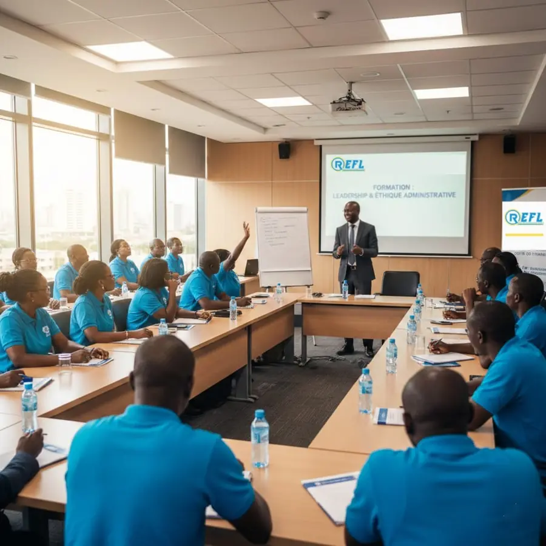
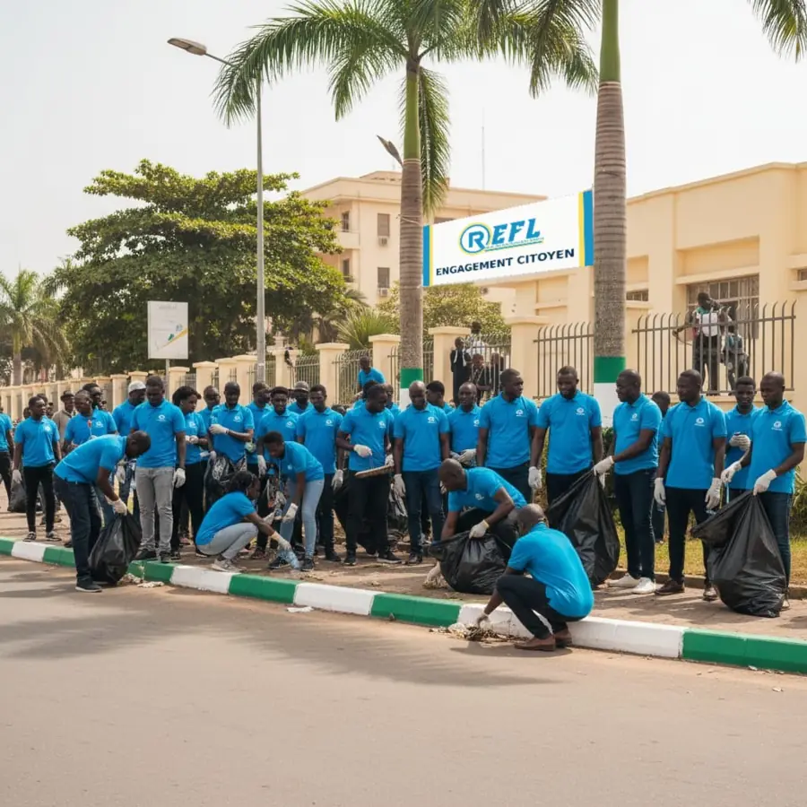
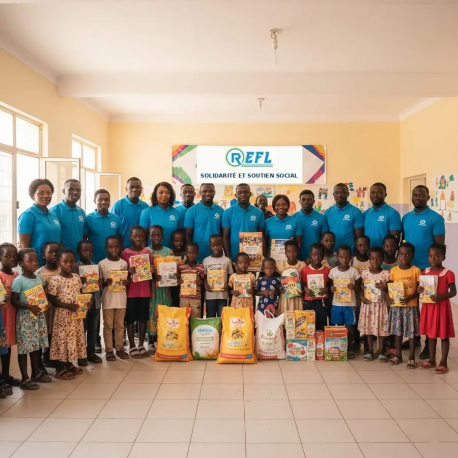
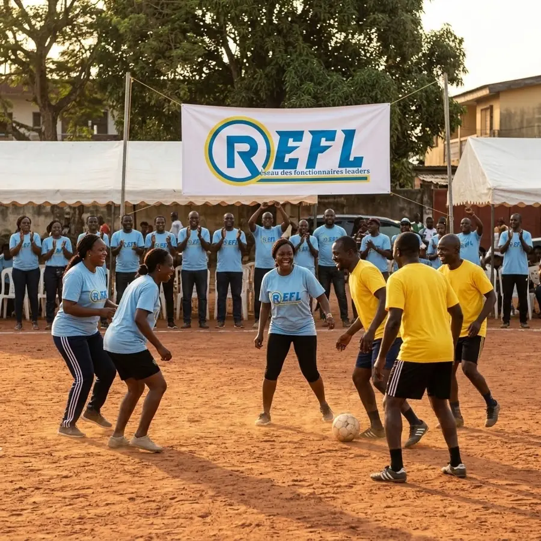
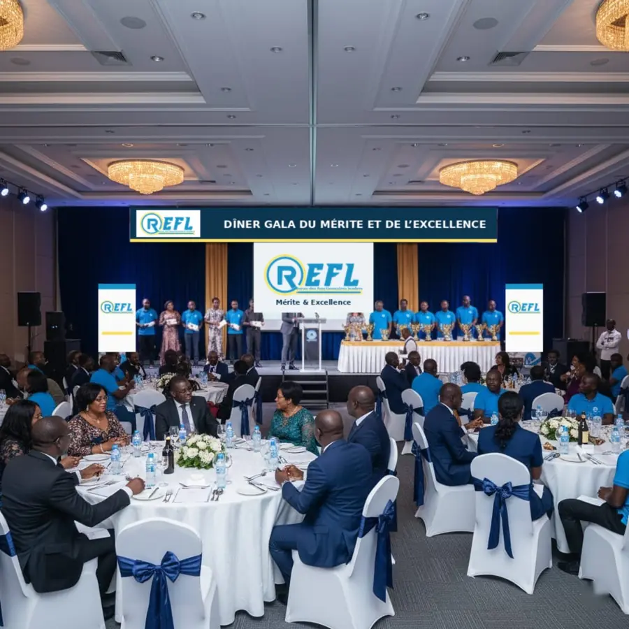
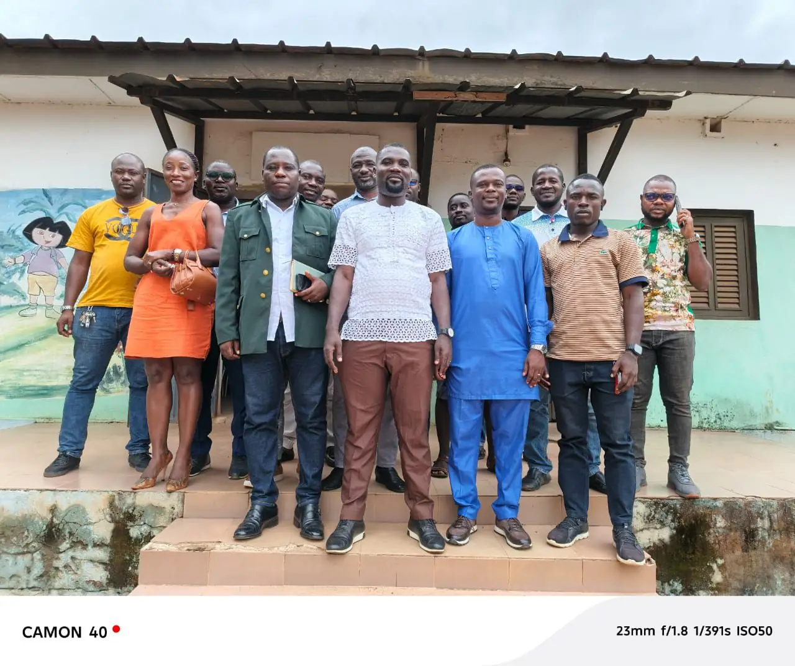

Accueil › Activités
Activités
Formations, actions citoyennes, cohésion et célébration du mérite : un programme annuel porté par les comités régionaux.

Formations
Pilier du réseau, les formations renforcent les capacités des membres et développent le leadership, la compétence et l’excellence professionnelle.
- 4 sessions par région et par an, en janvier, mars, mai et juillet ;
- dates précises proposées par chaque comité régional et validées par le CEPF ;
- formateurs désignés au niveau national ;
- présences enregistrées par le Comité de suivi et d’encadrement.


Actions citoyennes
Le réseau contribue au développement social et à l’engagement communautaire partout sur le territoire : 3 actions citoyennes par an et par région, en février, avril et octobre.
- dons et solidarité envers les orphelinats et les personnes vulnérables ;
- campagnes de salubrité, nettoyage des rues, protection de l’environnement ;
- rénovation, entretien ou embellissement d’édifices publics et communautaires.

Activités sportives et culturelles
Des rendez-vous qui renforcent la fraternité, l’esprit d’équipe et les liens entre fonctionnaires de différentes administrations.
- journée sportive et culturelle régionale, en juin, dans chaque région ;
- journée sportive nationale, en août : grand rassemblement de toutes les régions, organisé par le CEN et le CEPAL.

Dîners gala
Le réseau valorise l’engagement et récompense l’excellence.
- dîner gala régional de remise de parchemins, en septembre, pour les membres ayant achevé leur niveau : participation obligatoire, en personne ou par représentation ;
- dîner gala national du mérite et de l’excellence, en octobre, pour distinguer les membres et partenaires méritants : participation facultative et payante, ouverte à tous.
Une année au REFL-CI
Calendrier type d’un bureau régional. Les dates de chaque activité sont fixées par le CGA et les comités régionaux, puis communiquées aux membres.
- NovembreAssemblée généraleBilan de l’année et élection du nouveau Porte-parole nationalInstances
- DécembrePassation et installationPassation des charges, élection des porte-paroles régionaux et installation des délégationsInstances
- JanvierSession de formation n° 1Prise de fonction du nouveau Porte-parole national et lancement du parcoursFormation
- FévrierAction citoyenne n° 1Salubrité ou solidarité communautaireAction citoyenne
- MarsSession de formation n° 2Approfondissement des modules du niveauFormation
- AvrilAction citoyenne n° 2Dons sociaux ou embellissement d’édifices publicsAction citoyenne
- MaiSession de formation n° 3Formations et coaching spécialisé par niveauFormation
- JuinJournée sportive et culturelle régionaleCohésion entre les membres de la régionCohésion
- JuilletSession de formation n° 4Clôture du cycle annuel de formationFormation
- AoûtJournée sportive nationaleGrand rassemblement de toutes les régionsCohésion
- SeptembreDîner gala de remise de parcheminRemise des parchemins de fin de niveau, dans chaque régionGala
- OctobreAction citoyenne n° 3 et dîner gala du mériteTroisième action citoyenne et dîner gala du mérite et de l’excellenceGala
L’année budgétaire court de janvier à décembre ; le plan d’action, lui, de novembre à octobre.

Au plus près des fonctionnaires
Les comités exécutifs régionaux, départementaux et locaux organisent les activités dans leur zone, mobilisent les membres et participent aux rendez-vous nationaux.
En juillet 2025, la tournée nationale d’information a déjà permis de rencontrer les fonctionnaires dans onze localités du pays.
Voir les photosDevenez un leader public
Rejoignez un réseau qui forme, encadre et valorise les fonctionnaires engagés pour une administration plus performante.